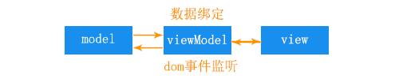

前端工程搭建
mvvm？
MVVM是Model-View-ViewModel的简写。即模型-视图-视图模型。【模型】指的是后端传递的数据。【视图】指的是所看到的页面。【视图模型】mvvm模式的核心，它是连接view和model的桥梁。它有两个方向：一是将【模型】转化成【视图】，即将后端传递的数据转化成所看到的页面。实现的方式是：数据绑定。二是将【视图】转化成【模型】，即将所看到的页面转化成后端的数据。实现的方式是：DOM 事件监听。这两个方向都实现的，我们称之为数据的双向绑定。总结：在MVVM的框架下视图和模型是不能直接通信的。它们通过ViewModel来通信，ViewModel通常要实现一个observer观察者，当数据发生变化，ViewModel能够监听到数据的这种变化，然后通知到对应的视图做自动更新，而当用户操作视图，ViewModel也能监听到视图的变化，然后通知数据做改动，这实际上就实现了数据的双向绑定。并且MVVM中的View 和 ViewModel可以互相通信。MVVM流程图如下：
